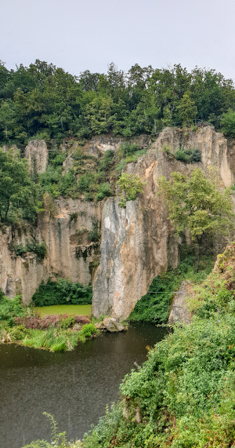

Megyer-hegyi Tengerszem
A Megyer-hegyi tengerszem és környéke az Aggteleki Nemzeti Park kezelésében álló egyedülálló volt malomkőbánya, nagy jelentőségű bányatörténeti és földtani emlék, védett terület, Károlyfalván, Borsod-Abaúj-Zemplén megyében.Földrajza és turizmusa
A tó Sárospatak városa fölött elhelyezkedő 324 méter magas Megyer-hegy területén található.
Mélysége egyes helyeken a 6,5 métert is elérheti, a tavat körbevevő sziklafalak maximum 70 méterre magasodnak a víztükör fölé. A bányagödör mindössze 4000 köbméter.
2011-ben, az Origo internetes újság Csillagtúra nevű, Magyarország 7 természeti csodáját kereső online játékában az olvasók a Megyer-hegyi tengerszemet találták a legszebbnek, és sorolták az első helyre.
Adatlap
| Elhelyezkedése | Sárospatak Borsod-Abaúj-Zemplén megye |
|---|---|
| Terület | 0,0107 km2 |
| Alapítás éve | 1997 |
| Felügyelő szervezet | Aggteleki Nemzeti Park Igazgatóság |